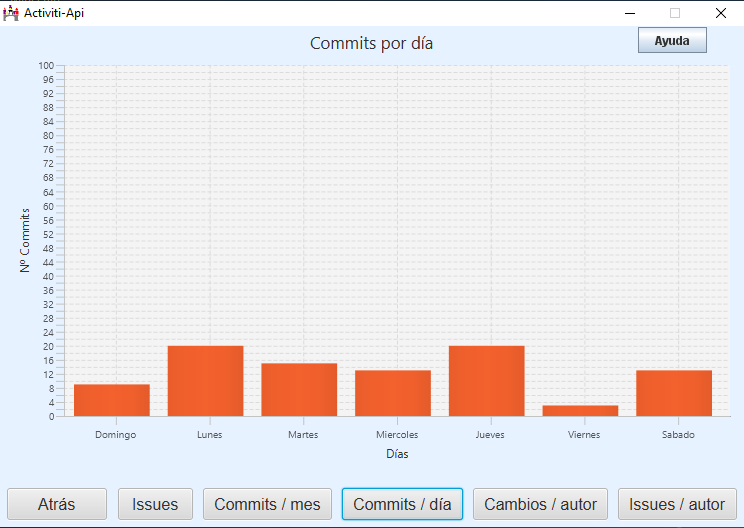
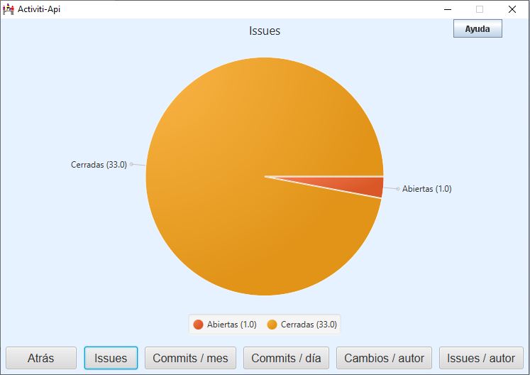

La pantalla muestra un botón por cada tipo de gráfico disponible y un botón Atrás para volver a la pantalla anterior.
Los graficos que aparecen son de dos tipos:
Gráfico de barras:

Y gráfico circular:
